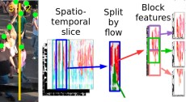
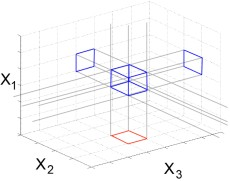

Theses and Term Papers

Pedestrian Line Counting by Probabilistic Combination of Flow and Appearance Information
István Sárándi
RWTH Aachen University, Germany, 2015.
Master thesis
Code (C++)
Feature Mining for Localized Crowd Counting
István Sárándi
Seminar Current Topics in Computer Vision and Machine Learning, RWTH Aachen University, 2014.
Term paper
Slides
Code (C#)

Subspace Clustering of High Dimensional and Streaming Data
István Sárándi
Seminar Multimedia Retrieval and Data Mining, RWTH Aachen University, 2013.
Term paper
Slides
Computing Semantic Similarity Between Medical Learning Objectives Across Catalogues
István Sárándi
Institute of Medical Informatics, RWTH Aachen University, 2016.
Term paper
Code (Java)
System Development to Support Medical Coding
(HU: Egészségügyi Kódolástámogató Rendszer Fejlesztése)
István Sárándi
Budapest University of Technology and Economics, Hungary, 2011.
Bachelor thesis (in Hungarian)
Slides (in Hungarian)
Code (Java)